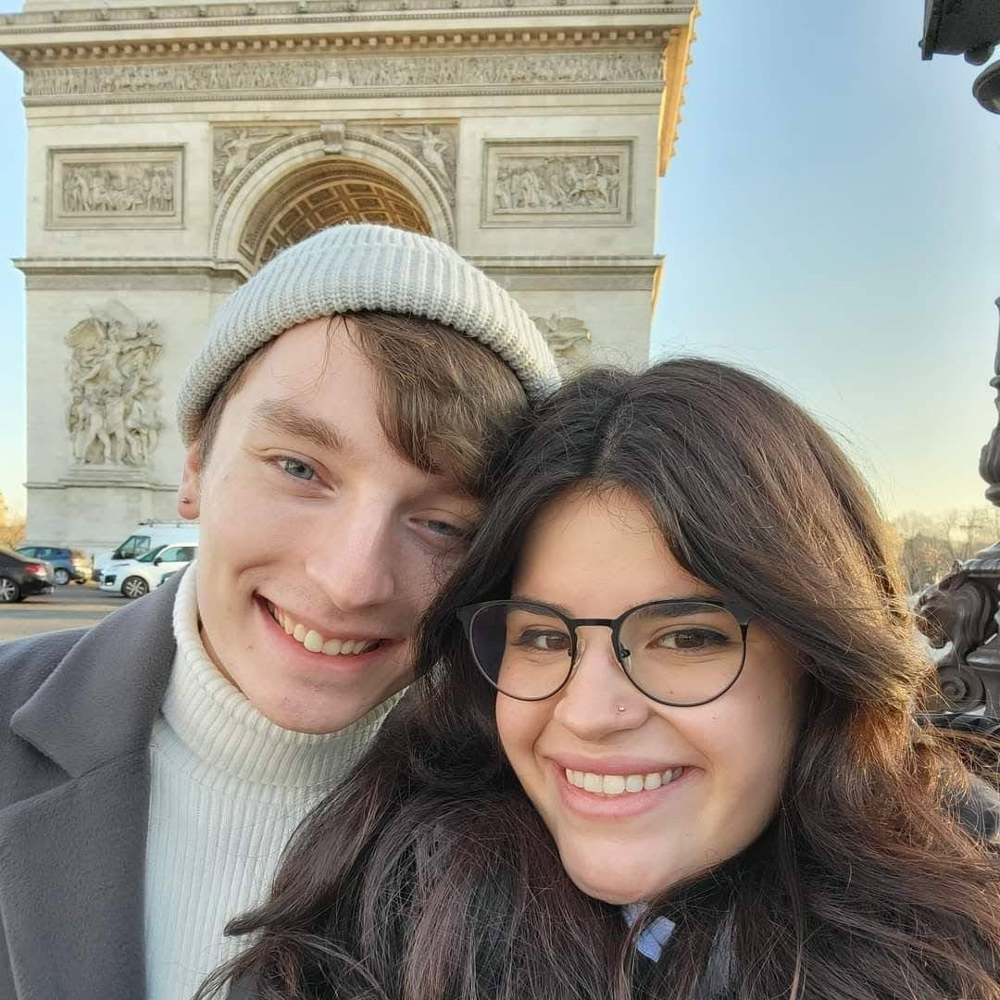

Hello, my name is Brandon McHenry.

I'm a Senior at Rowan University, where I am currently pursuing
an accelerated master's degree in Computer Science. I am extremely
passionate about programming, and wish to pursue a career in
software engineering. In my free time, I am very interested in
game development, and am currently working on passion projects.
I am most comfortable programming in Java, as that is what the
curriculum at Rowan University is based around. From various classes
I have used MySQL, C, Perl, Javascript, and HTML. From my internship at
Lockheed Martin I became well-versed in C++. And, I have personally
learned how to code in C# (for Unity game development). I still have
much to learn in these languages, but feel confident in my ability to
use these and learn new ones as well.
I enjoy traveling, learning new languages, music, and exercising. I'm currently
learning how to speak Korean and have plans to learn to play the drums.
If you want to know more about what kind of things I like to do, just ask!